Il fait très chaud, la rue de ce petit village n'est pas assez large pour contenir tout ce monde. Au passage du défunt, je suis littéralement poussé sur le côté. La procession sera courte, mais l'intensité de l'instant restera gravée. J'assiste à ma première crémation, en invité privilégié.
Notre ami prêtre vient de perdre son père, lui-même grand prêtre, décédé quelques jours plus tôt. Nous sommes conviés à cet événement, si important pour eux.
Dans l'hindouisme balinais, le corps n'est qu'une enveloppe. Ce que la crémation libère, c'est l'âme — en la rendant aux cinq éléments par le feu, elle lui ouvre le chemin vers la réincarnation, vers l'union avec le divin. Sans ce feu, l'esprit resterait ici, prisonnier, une présence que personne ne souhaite. C'est pour ça qu'on ne pleure pas comme en Occident : on fête.
L'effigie du défunt · Bali
Autour de nous, des sourires, des échanges entre générations, on nous tend à boire, à grignoter. Des enfants filent entre les jambes des adultes, tous rassemblés pour cet instant.
Accomplir ce devoir envers le défunt engage toute une communauté — parfois des années d'économies pour une cérémonie à la hauteur. L'argent compte, ici plus qu'ailleurs : ceux qui n'en ont pas assez attendent, parfois longtemps, l'occasion d'une crémation collective pour, malgré tout, accomplir ce passage.
Nous quittons donc sa maison pour l'accompagner vers le setra (le lieu où il sera brûlé). L'agitation est à son comble : au sommet de la tour, son fils, lui-même prêtre, et le chef du temple s'agitent pour officier certains rituels et faciliter le passage sous les câbles qui traversent la rue. Devant eux, le taureau est agité dans tous les sens, la procession n'a de cesse de zigzaguer pour désorienter l'esprit du défunt. Le passage du petit carrefour est le climax de cette désorientation, avec plusieurs mouvements sur lui-même d'une certaine brutalité — qui pourrait être choquante si elle n'était pas accompagnée de rires et de cris de joie.
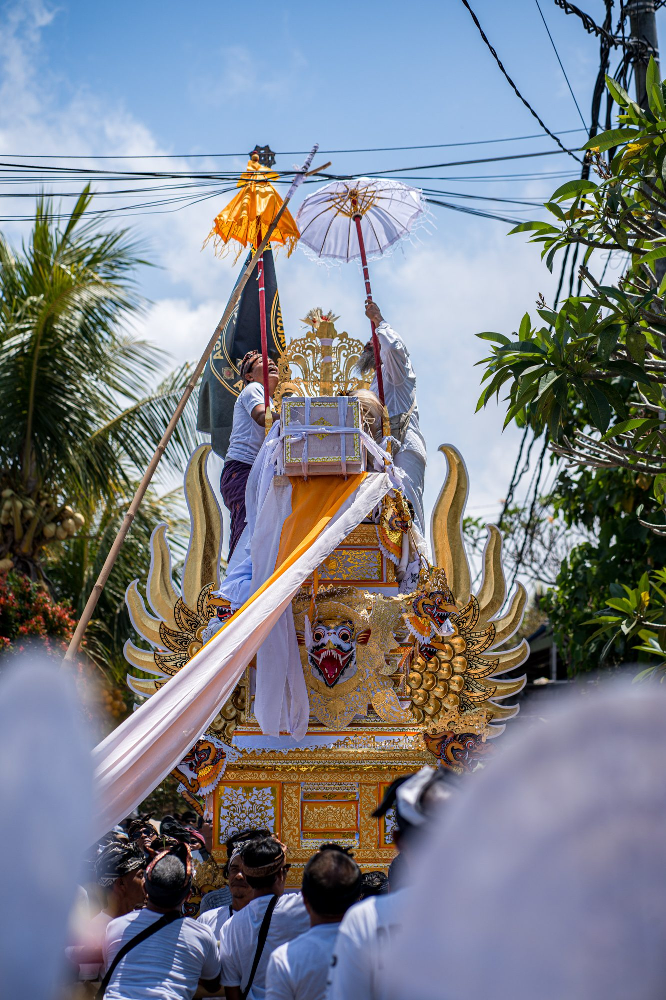
Au sommet de la tour · Bali
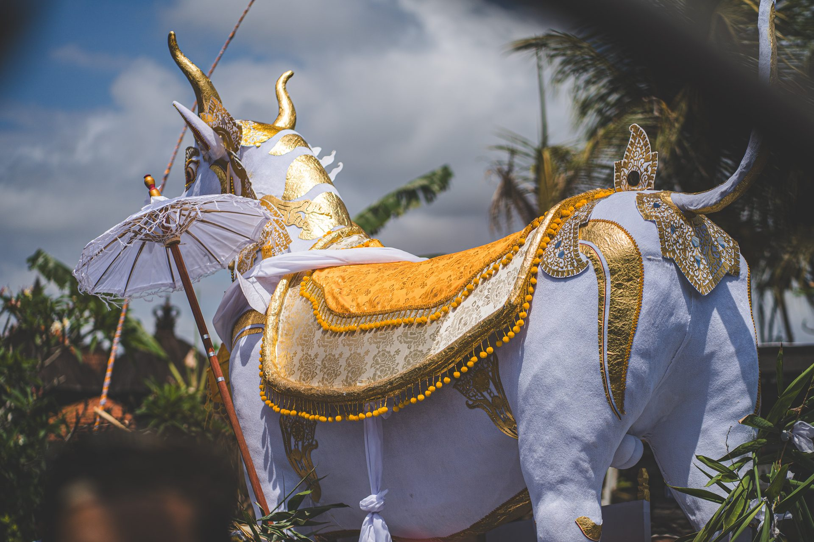
Le taureau désoriente l'esprit · Bali
Le village entier semble présent : des amis, des connaissances, et bien sûr la famille. Toutes les petites filles, portant portraits, fleurs et offrandes, sont rassemblées auprès du taureau et s'amusent de ses mouvements comme elles joueraient dans la cour d'école. Des jeunes enfants se blottissent en s'accrochant de toutes leurs forces aux pattes de ce taureau devenu manège.
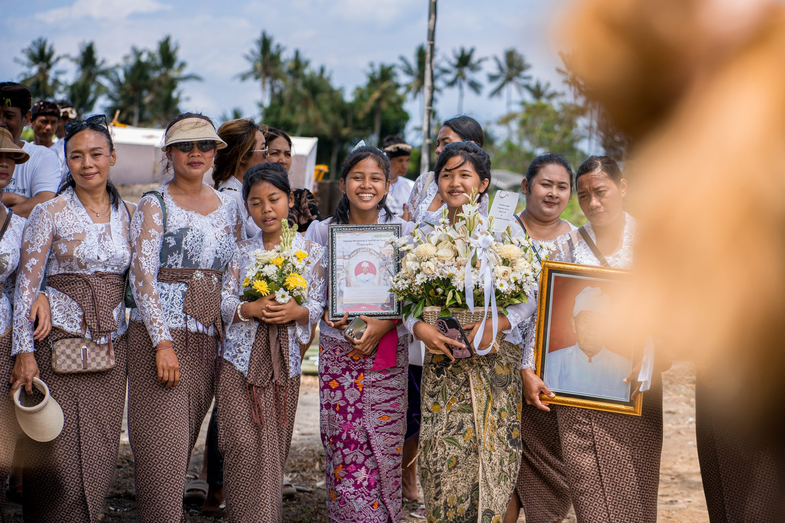
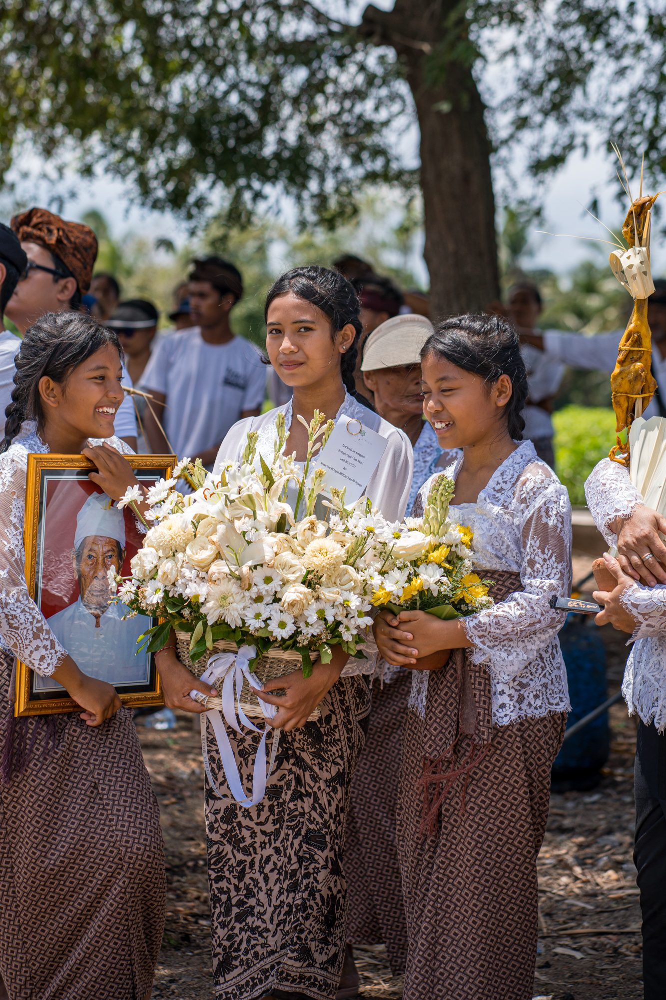
Portraits et fleurs pour le défunt · Bali
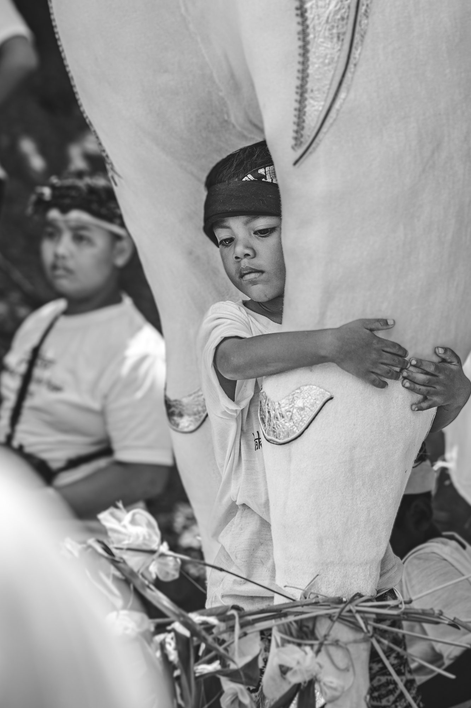
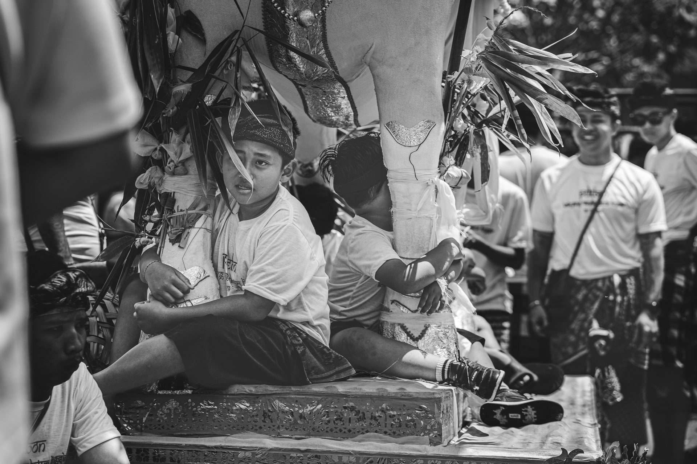
Le taureau devenu manège · Bali
Sans transition, la procession retrouve son calme en empruntant la ligne droite qui mène au lieu final. Les hommes préparent le sarcophage où l'on déplace le corps, pour le placer dans le petulangan (le taureau) qui sera sa dernière demeure terrestre.
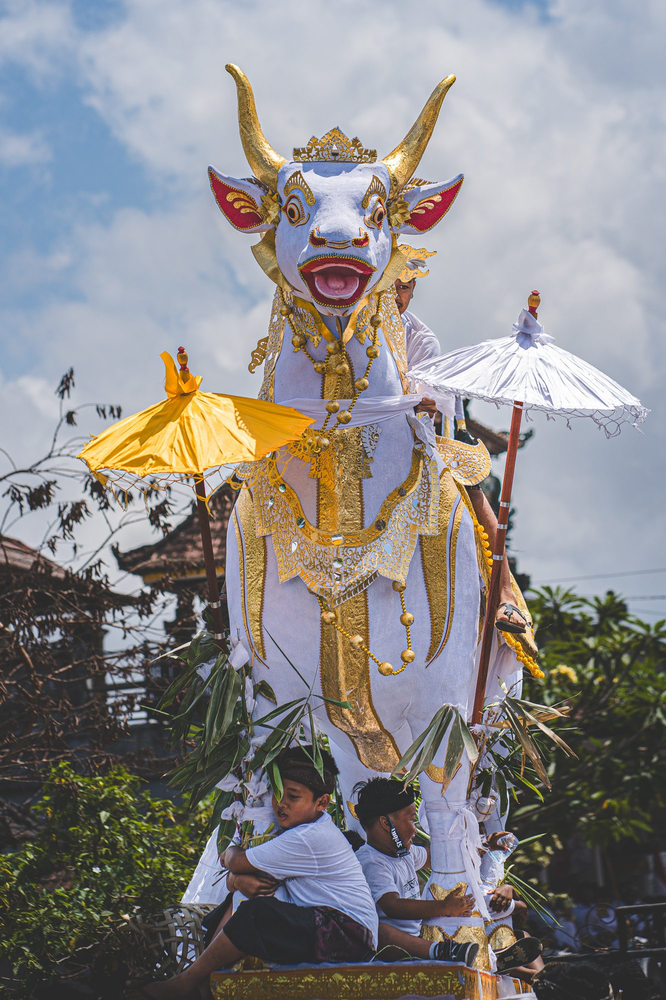
Le petulangan · Bali
Toutes les femmes de la famille, avec leurs sourires et leurs tenues superbes, viennent porter des offrandes. Il y en a beaucoup. Certaines représentent les cinq éléments que le corps doit restituer à l'univers, d'autres sont plus symboliques, d'autres encore plus personnelles, comme des photos du défunt — symbolisant la rupture de sa vie matérielle.
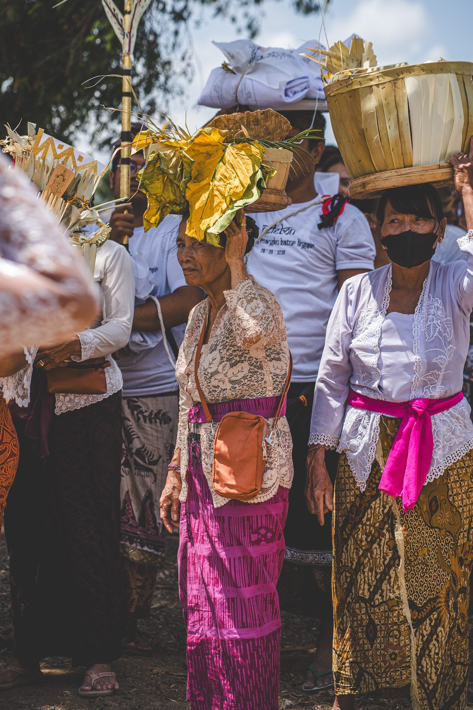
Les offrandes des femmes · Bali
Parmi cette foule, j'observe les attitudes de chacun. Il n'y a pas de larmes, il n'y a pas de tristesse. Un des petits-fils du défunt nous explique que la vie est belle telle qu'elle est, qu'ils sont, dit-il, contrairement à nous, conscients de la mort, donc faisant réellement partie de la vie. Pour eux, cette journée est belle : on honore un grand prêtre pour son passage vers une nouvelle vie — ou, pour les âmes les plus pures, vers la libération définitive du cycle des renaissances, le moksha.
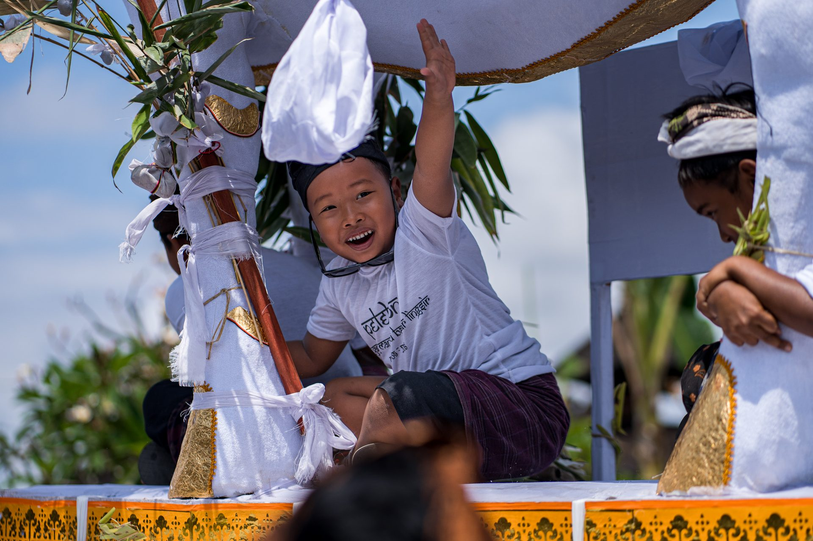
Pas de tristesse, ici · Bali
L'embrasement du sarcophage dégage une chaleur incroyable et clôture directement le processus. Je suis surpris par la situation : rien n'est solennel. Une fois le sarcophage fermé, après le dépôt des offrandes, le feu est lancé par des torches rudimentaires reliées à des bonbonnes de gaz. Le public autour ne semble même plus réellement présent — certains discutent, d'autres boivent quelques bières locales, quand d'autres se rassemblent pour faire des jeux. Je suis loin, très loin des enterrements que j'ai connus. Je mesure la chance unique d'être invité comme ami et de vivre cet événement de l'intérieur.
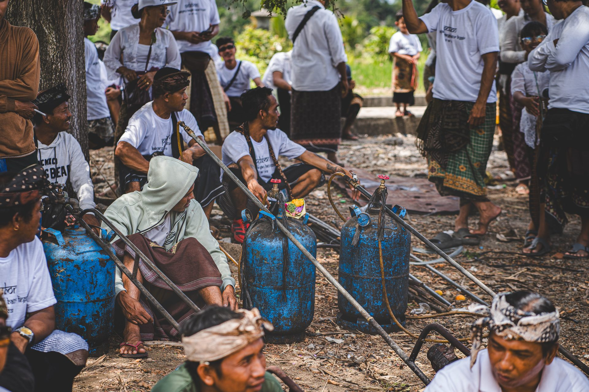
Les torches rudimentaires · Bali
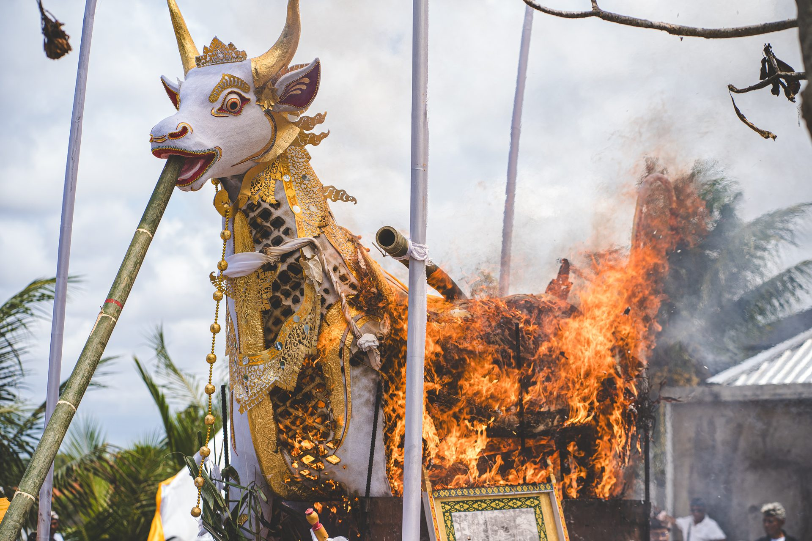
L'embrasement · Bali
Les cornes dans les flammes · Bali
Je suis, encore une fois, touché au plus profond de mes croyances : Bali ne triche pas avec les siennes. Cette île vit sa spiritualité avec une sincérité désarmante et un bonheur communicatif — même si la réalité, bien sûr, est un peu plus complexe que cela.
"Bali ne triche pas avec les siennes."
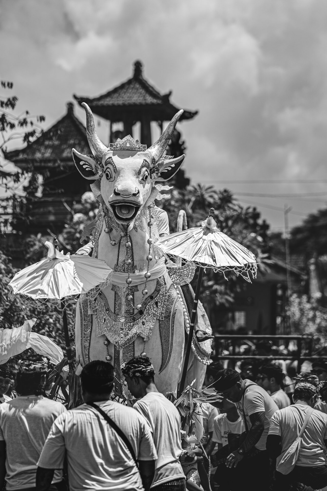
Devant les toits du temple · Bali
Made prend malgré tout le temps de nous expliquer que la journée, pour eux, n'est pas terminée : ils récupéreront les cendres pour les placer dans une noix de coco, symbole de la terre, puis les mèneront en procession jusqu'à la mer, pour libérer définitivement l'âme de son père.
Repères
- RiteNgaben — crémation hindoue-balinaise
- CroyanceLibération de l'âme par le feu, vers la réincarnation ou le moksha
- LieuBali